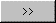
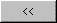

Harmony vous permet d'invalider certains boutons et choix de menu lors de la saisie d’une donnée ou lors de la consultation d’une page ou d’un tableau (les boutons non valides étant automatiquement grisés).
Un bouton (ou un choix de menu) nommé est invalidé par défaut. La fenêtre de sélection des boutons permet de valider une série de boutons ou de choix nommés. Elle comporte deux listes :
La liste de gauche contient tous les boutons nommés de toutes les pages du masque, actuellement invalides pour la donnée/page/tableau considéré. Le nom du bouton est précédé du numéro de page dans laquelle il se trouve. Cette liste contient également les boutons nommés appartenant aux barres d'outils et aux menus, dont le champ "Nom pour la sélection" est garni, ainsi que les noms que vous avez ajoutés manuellement.
La liste de droite contient les boutons nommés actuellement valides pour la donnée/page/tableau considéré.
Pour déplacer un bouton d'une colonne à l'autre, double cliquez sur son nom, ou sélectionnez le avec la souris et cliquez sur le bouton

ou
.
La fenêtre des boutons nommés peut être appelée :
depuis les propriétés des objets en saisie, pour le grisage des choix et des boutons lors d'une saisie de masque (XmeInput) ou de ligne de tableau (XmeListInput),
depuis les propriétés d'une page, pour le grisage des choix et des boutons lors d’une consultation de la page (XmeConsult),
depuis les propriétés d’un tableau, pour le grisage des choix et des boutons lors de la consultation du tableau (XmeListConsult).
Remarques
La notion de bouton nommé s'applique aux boutons classiques, aux boutons de barre d'outils et aux choix de menu (ou de menu popup). Un bouton est "nommé" si sa propriété « Nom pour la sélection » est renseignée. Dans ce cas, le bouton ou le choix n’est valide que si son nom figure dans la liste des noms associée à la donnée en cours de saisie (ou à la page ou au tableau consulté).
Le bouton "Ajouter des noms de bouton" vous permet d'ajouter des noms qui ne sont pas dans le masque en cours (permet par exemple de spécifier des boutons de barres d'outils ou des choix de menus saisis dans un autre fichier masque).
Les noms provenant des menus et barres d'outils sont précédés de # et les noms ajoutés manuellement sont précédés de *.
Concernant les boutons "classiques" (hors barre d'outils), seuls les boutons nommés sont proposés puisque :
- les boutons non nommés globaux sont toujours valides,
- les boutons non nommés locaux de la page courante sont toujours valides,
- les boutons non nommés locaux d'une autre page ne sont jamais valides.
Les boutons nommés locaux des autres pages ne sont pas proposés non plus car jamais valides.
Par le choix Ajouter boutons du menu Edition, il est possible de valider une série de boutons pour tous les objets préalablement sélectionnés. Cela vous évitera de passer sur chaque donnée si vous rajoutez un bouton dans une page.